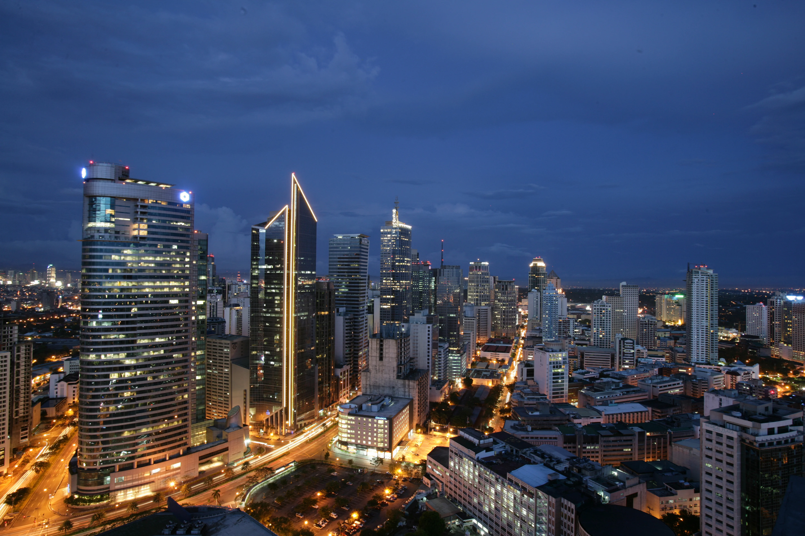

History of the Philippines
Philippines, island country of Southeast Asia in the western Pacific Ocean. It is an archipelago consisting of more than 7,000 islands and islets lying about 500 miles (800 km) off the coast of Vietnam. Manila is the capital, but nearby Quezon City is the country’s most-populous city. Both are part of the National Capital Region (Metro Manila), located on Luzon, the largest island. The second largest island of the Philippines is Mindanao, in the southeast.
The Philippines takes its name from Philip II, who was king of Spain during the Spanish colonization of the islands in the 16th century. Because it was under Spanish rule for 333 years and under U.S. tutelage for a further 48 years, the Philippines has many cultural affinities with the West. It is, for example, the second most-populous Asian country (following India) with English as an official language and one of only two predominantly Roman Catholic countries in Asia (the other being East Timor). Despite the prominence of such Anglo-European cultural characteristics, the peoples of the Philippines are Asian in consciousness and aspiration.
The country was wracked by political turmoil in the last quarter of the 20th century. After enduring more than a decade of authoritarian rule under Pres. Ferdinand Marcos, the broadly popular People Power movement in 1986 led a bloodless uprising against the regime. The confrontation resulted not only in the ouster and exile of Marcos but also in the restoration of democratic government to the Philippines rice farming in the Philippines rice farming in the Philippines Villagers tending a rice field in the Philippines.
Contemporary Filipinos continue to grapple with a society that is replete with paradoxes, perhaps the most obvious being the presence of extreme wealth alongside tremendous poverty. Rich in resources, the Philippines has the potential to build a strong industrial economy, but the country remains largely agricultural. Especially toward the end of the 20th century, rapid industrial expansion was spurred by a high degree of domestic and foreign investment. That growth, however, simultaneously contributed to severe degradation of the environment. 
The Philippines also emerged as a regional leader in education during the late 20th century, with a well-established public school and university system, and by the early 21st century the country had one of the highest literacy rates in Asia.